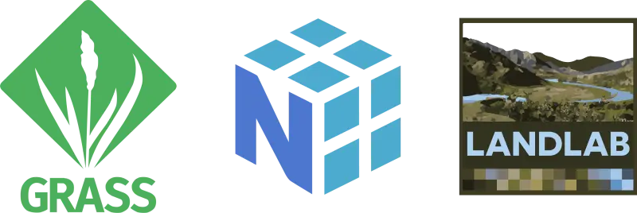
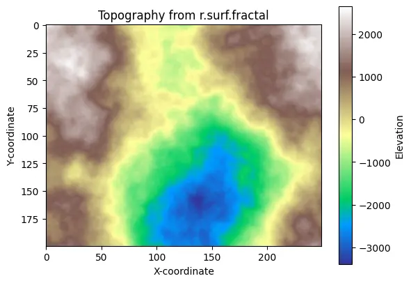
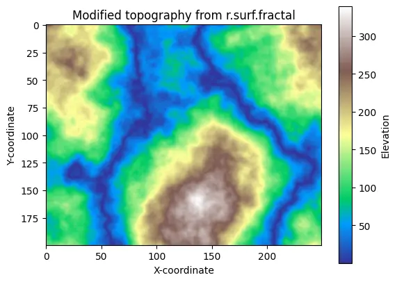
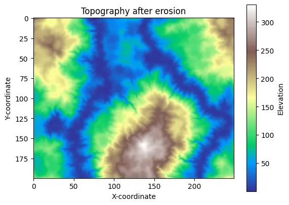
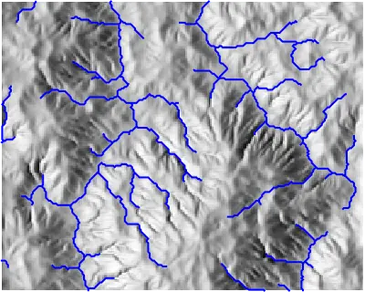
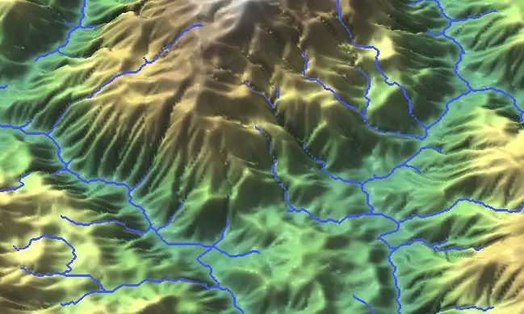

# import standard Python packages
import os
import sys
import subprocess
# for some environments, this path setup can be skipped
sys.path.append(
subprocess.check_output(["grass", "--config", "python_path"], text=True).strip()
)
# import GRASS Python packages
import grass.script as gs
import grass.jupyter as gj
from grass.tools import ToolsUsing GRASS, NumPy, and Landlab for Scientific Modeling
NumPy
raster
terrain
intermediate
Landlab
Python
hydrology
matplotlib
Learn how to integrate NumPy arrays with GRASS tools on an example using Landlab modeling framework.
Introduction
This short tutorial shows how to integrate NumPy arrays with GRASS tools to create a smooth workflow for scientific modeling and analysis in Python.
Specifically, it demonstrates a complete workflow: generating a terrain surface in GRASS, importing it into Landlab (an open-source Python library for running numerical models of Earth-surface dynamics), running an erosion model, and then returning the results to GRASS for further hydrologic analysis.
With the grass.tools API (introduced in GRASS v8.5), tools can now accept and return NumPy arrays directly, rather than working only with GRASS rasters. While native rasters remain the most efficient option for large-scale processing, NumPy arrays make it easy to connect GRASS with the broader Python scientific ecosystem, enabling advanced analysis and seamless use of familiar libraries.
NoteHow to run this tutorial?
This tutorial is prepared to be run in a Jupyter notebook locally or using services such as Google Colab. You can download the notebook here.
If you are not sure how to get started with GRASS, checkout the tutorials Get started with GRASS & Python in Jupyter Notebooks and Get started with GRASS in Google Colab.

Generating a fractal surface in GRASS
First we will import GRASS packages:
Create a new GRASS project called “landlab”. Since we will be working with artifical data, we don’t need to provide any coordinate reference system, resulting in a generic cartesian system.
gs.create_project("landlab")Initialize a session in this project and create a Tools object we will use for calling GRASS tools:
session = gj.init("landlab")
tools = Tools()Since we are generating artificial data, we need to specify the dimensions (number of rows and columns). We also need to let GRASS know the actual coordinates we want to use; we will do all that by setting the computational region. Lower-left (south-west) corner of the data will be at the coordinates (0, 0), the coordinates of the upper-right (nort-east) corner are number of rows times cell resolution and number of columns times cell resolution. We chose a cell resolution of 10 horizontal units, which would impact certain terrain analyses, such as slope computation, and certain hydrology processes.
rows = 200
cols = 250
resolution = 10
tools.g_region(s=0, w=0, n=rows * resolution, e=cols * resolution, res=resolution)Creating a fractal surface as a NumPy array
We will create a simple fractal surface with r.surf.fractal.
The trick is to use the output parameter with the value np.array to request a NumPy array instead of a native GRASS raster. This way GRASS provides the array as the result of the call:
import numpy as np
fractal = tools.r_surf_fractal(output=np.array, seed=6)
NoteNumPy arrays in GRASS version < 8.5
Directly passing NumPy arrays to GRASS tools and receiving them back is a new feature in GRASS v8.5. If you work with older versions of GRASS, you can use grass.script.array:
import grass.script as gs
import grass.script.array as ga
gs.run_command("r.surf.fractal", seed=6, output="fractal")
fractal = ga.array("fractal")Now we can display fractal array e.g., using matplotlib library:
import matplotlib.pyplot as plt
plt.figure()
plt.imshow(fractal, cmap='terrain')
plt.colorbar(label='Elevation')
plt.title('Topography from r.surf.fractal')
plt.xlabel('X-coordinate')
plt.ylabel('Y-coordinate')
plt.show()
We can modify the array:
fractal *= 0.1
fractal = np.abs(fractal)
plt.figure()
plt.imshow(fractal, cmap='terrain')
plt.colorbar(label='Elevation')
plt.title('Modified topography from r.surf.fractal')
plt.xlabel('X-coordinate')
plt.ylabel('Y-coordinate')
plt.show()
From GRASS to Landlab
Now, let’s use Landlab’s modeling capabilities to burn in an initial drainage network using the Landlab’s Fastscape Eroder.
Create the RasterModelGrid specifying the same dimensions we used for creating the fractal surface. Add the terrain elevations as a 1D array (flattened with ravel) to the grid’s nodes under the standard field name “topographic__elevation”.
from landlab import RasterModelGrid
grid = RasterModelGrid((rows, cols), xy_spacing=resolution)
grid.add_field("topographic__elevation", fractal.ravel(), at="node")Run the erosion of the landscape:
from landlab.components import LinearDiffuser
from landlab.components import FlowAccumulator, FastscapeEroder
fa = FlowAccumulator(grid, flow_director="D8")
fsp = FastscapeEroder(grid, K_sp=0.01, m_sp=0.5, n_sp=1.0)
ld = LinearDiffuser(grid, linear_diffusivity=1)
for i in range(100):
fa.run_one_step()
fsp.run_one_step(dt=1.0)
ld.run_one_step(dt=1.0)Extract the resulting NumPy array and visualize it:
elevation = grid.at_node['topographic__elevation'].reshape(grid.shape)
plt.figure()
plt.imshow(elevation, cmap='terrain', origin='upper')
plt.colorbar(label='Elevation')
plt.title('Topography after erosion')
plt.xlabel('X-coordinate')
plt.ylabel('Y-coordinate')
plt.show()
From Landlab to GRASS
Now we will bring the eroded topography back to GRASS for additional hydrology modeling. We will derive streams using the r.watershed and r.stream.extract tools.
The Tools API allows us to directly plugin the NumPy elevation array into the tool call.
tools.r_watershed(elevation=elevation, accumulation="accumulation")
tools.r_stream_extract(
elevation=elevation,
accumulation="accumulation",
threshold=300,
stream_vector="streams",
)And visualize them using gj.Map on top of shaded relief:
tools.r_relief(input=elevation, output="relief")
m = gj.Map(width=400)
m.d_rast(map="relief")
m.d_vect(map="streams", type="line", color="blue", width=2)
m.show()
Note
For creating a stream network with gullies using GRASS, see the Earthworks: Gully Modeling tutorial.
Now if we want to store the eroded topography as a native GRASS raster, we can use grass.script.array to create a GRASS array object with the dimensions given by the current computational region. Then we copy the NumPy array and write the raster map as GRASS native raster.
import grass.script.array as ga
# Create a new grasss.script.array object
grass_elevation = ga.array()
# Copy values from elevation array
grass_elevation[...] = elevation
# Write new GRASS raster map 'elevation'
grass_elevation.write("elevation")
NoteWhat about N-dimensional arrays?
For 3D arrays, you can use grass.script.array3d package.
For N-dimensional arrays, check out the new xarray-grass bridge developed by Laurent Courty
Let’s visualize the new GRASS elevation map with streams by setting its color scheme to srtm_percent and rendering it in 3D using the grass.jupyter.Map3D class:
tools.r_colors(map="elevation", color="srtm_percent")
elevation_3dmap = gj.Map3D()
elevation_3dmap.render(
elevation_map="elevation",
resolution_fine=1,
vline="streams",
vline_width=3,
vline_color="blue",
vline_height=3,
position=[0.50, 0.00],
height=5600,
perspective=10,
)
elevation_3dmap.show()
And now let’s augment it with Nano Banana AI:

The development of this tutorial and the grass.tools package (developed by Vaclav Petras) was supported by NSF Award #2322073, granted to Natrx, Inc.